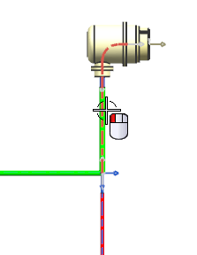
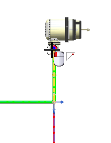
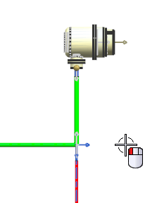

Reorient a segment using the Two Points method
-
Select the segment with the built-in path.

You need this segment to be in-line with the main harness branch.
-
From the Branch Angle Type list, select Two Points.
-
Click the middle mouse button to advance to the Specify From Point row.
-
Select the upper endpoint on the linear segment.

-
Make sure the Specify To Point row is highlighted.
-
Select a cursor location to the right of the circular connector that is approximately in-line with the main horizontal branch.

You do not need to get the exact location.
-
点击确定。

The segment is reoriented.
Note
The Orient Branch command can be performed in the Drafting application. Just make sure you update your drawing as you do this.